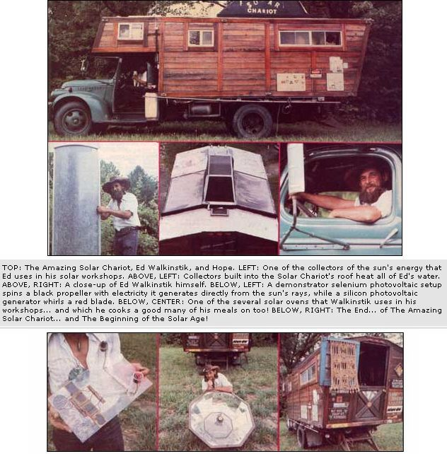

The next time you're toolin' down the of Interstate and you come up behind (or are passed by!) some thing that looks like a cross between Noah's Ark, a redwood sauna, and a vintage Winnebago ... consider yourself privileged. 'Cause that contraption is Ed Walkinstik's Amazing Solar Chariot, and it-just like its owner and operator-is, to say the least, unusual . . . and just a little hung up on the sun and what its energy can do for mankind.
Ed-who's half Choctaw and grew up on a reservation in Oklahoma-says that he first became aware of Ol' Sol's power when, as a boy, "I burned my bare feet on a blacktop road during the summer."
Apparently that lesson stuck, even through growing up and the 16 years that Walkinstik spent working with the Department of Defense. Because-back in about '72 or '73-Ed paid $25 for the chassis of a 1946 Chevrolet truck (which he had to dig out of a field), got permission to tear some well-seasoned wood out of an old art studio, rounded up a bunch of other recycled materials . . . and set to work.
Two years later he was ready to put the Solar Chariot-complete with shower, toilet, refrigerator and kitchen, dining and sleeping areas, you name it-on the road. And just not so incidentally: Walkinstik's rolling home is also outfitted with a solar-heated water supply, solar ovens, and a whole gob of sun-powered parabolic troughs and photovoltaic cells and other equipment that Ed can use to show people just how easy it is to harness OI' Sol's energy in a number of ways.
And that, of course, is exactly what Walkinstik, his little dog (Hope), and the Amazing Solar Chariot now spend all their time doing: Racking up 70,000 miles annually simply going from place to place conducting solar workshops for schools, colleges, environmental organizations, and other groups (even individuals!).
Ed has also lobbied in Washington ("a waste of my time") and California (Jerry Brown is "Alice in Wonderland") . . . but he finds his message is best received by the "salt of the earth" folks-people like you and us-that he talks to.
So: If you or your organization would like to have Ed drop in and set up a solar energy workshop for you the next time he's passing through your area (or you'd like to have Walkinstik run a product test on a sunpowered piece of hardware for you), write and ask. His address is Mr. Ed Walkinstik, The Solar Chariot, P.O. Box 511, North Highlands, California 95660. And don't forget to include a dollar or two and a stamped, self-addressed, long envelope with your query . . . just to help Ed out a little with the cost of sending you a reply.
|
 |
|
|